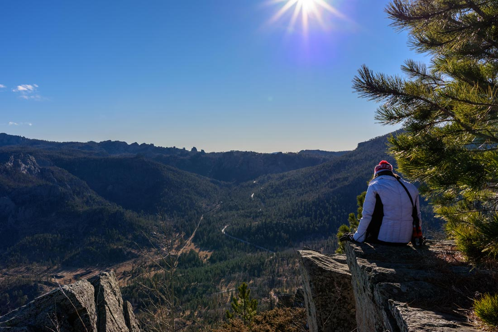
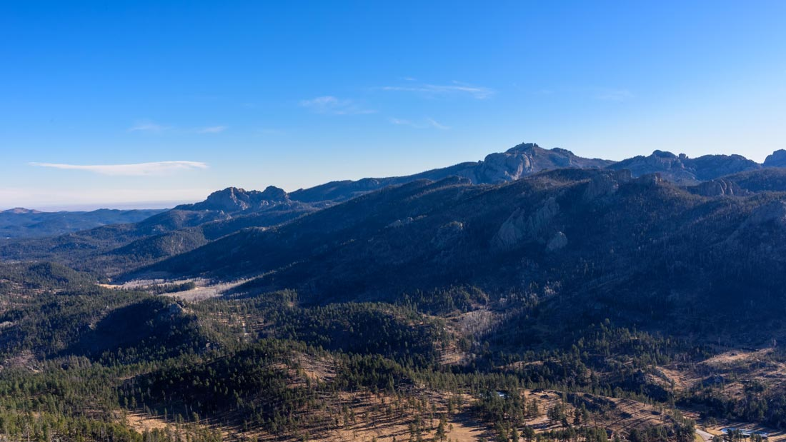

Blog Posts all posts
The Adventure Begins 2016-12-7
We set out from South Dakota in 50 mph winds hoping we wouldn't hit ice and get blown off the road. Last years winter was our original inspiration for putting the Sprinter together and escaping to the warmth of the South. What better time then now.
Our first night was spent on the north shore of Sheridan Lake in the Black Hills. Our heater flamed out and had trouble restarting in the middle of the night. This was alarming, as once the heater is out the cold didn't take long to wake us up. Luckily, it was able to restart and stay running until morning.
In the morning we hiked up to St. Elmo peak and enjoyed a windy view of Black Elk Peak (highest elevation between the rockies and alps). Being closer to nature was one of the reasons we were doing this in the first place. So cold is part of nature I guess... Whatever, it was worth it.
Google photosphere from St. Elmo's Peak
Michelle wondering if her toes are frozen.
The black hills. Black Elk peak is the highest of the visible peaks.
Van construction was entirely done in the warmth of the summer with ideas of winter in the back of the mind. We installed an Espar heater to keep us warm and are now hoping that it runs appropriately in the -8 degree Colorado night.
Fort Collins was our second night. We hit up the Planet Fitness in Loveland for a quick workout and shower. Brilliant idea of Michelle's to get a membership, $20/mo for a nationwide gym network that allows one guest, which is me. It snowed three inches in the night and our heater made it until morning but wouldn't restart after it remained off for a while. After some research we figured out that the exhaust muffler I installed was pooling condensation which was cooling when off and then freezing and not allowing proper airflow. Hopefully, we'll see if it makes it through tonight, the coldest night so far, dun dun dunnnn.
One of Michelle's reasons for wanting to embark with me in a van was to try and tour the states booking and playing her music. Today she played at The Downtown Artery in Fort Collins, CO. She is also working on releasing a cd soon with Marco Brandino.